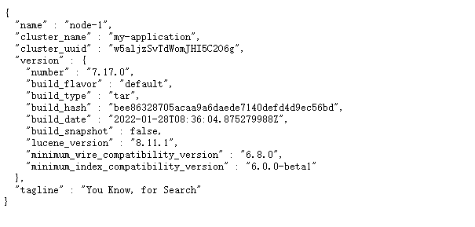
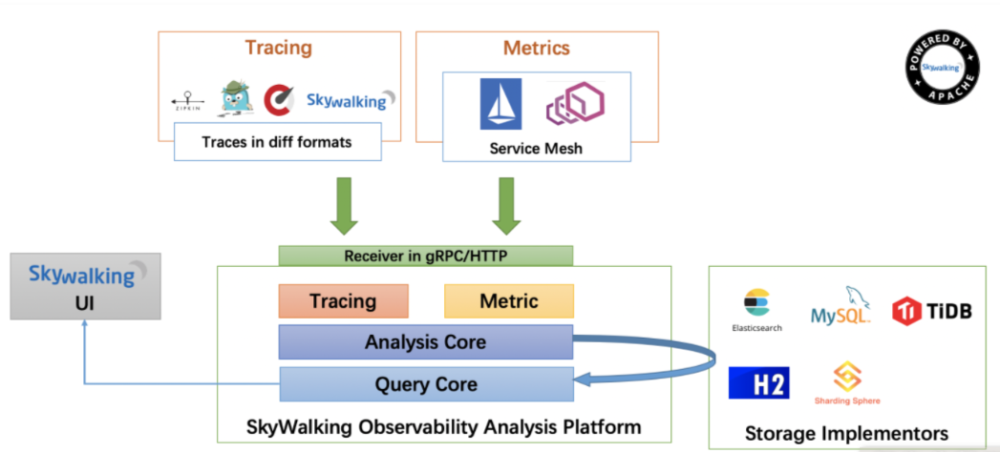
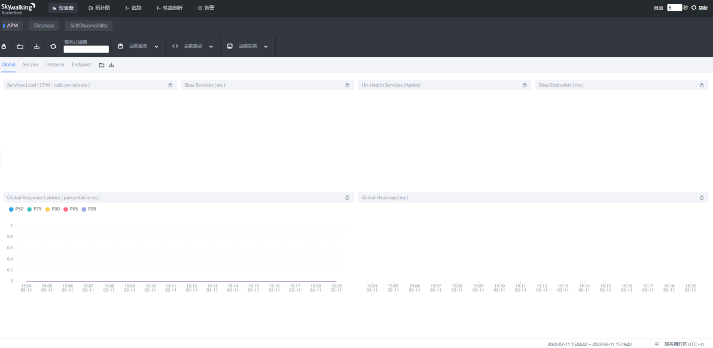
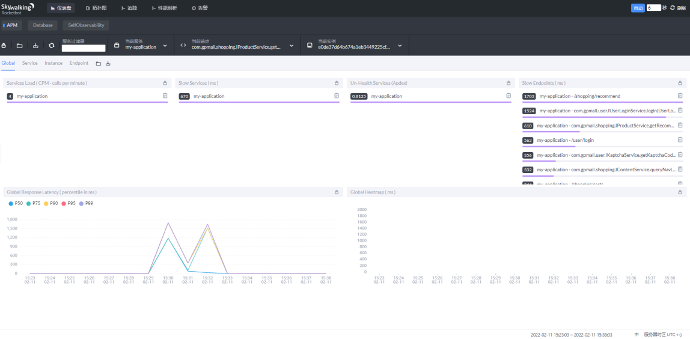
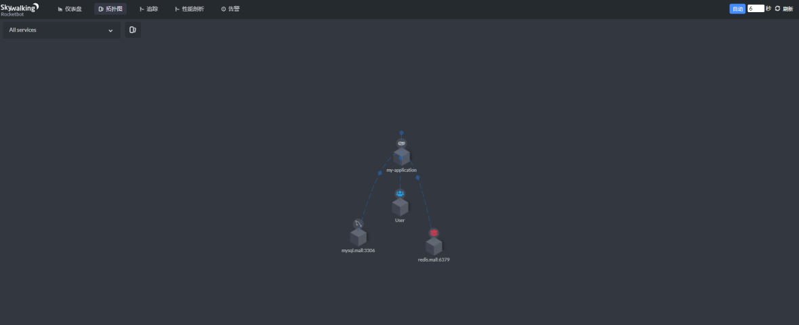

案例描述 本案例共讲述了Elasticsearch服务的搭建，以及搭建SkyWalking对应用商城利用探针方式进行检测。具体如下：
（1）搭建Elasticsearch服务；
（2）搭建SkyWalking OAP服务；
（3）搭建SkyWalking UI服务；
（4）搭建并启动应用商城服务，并配置 SkyWalking Agent。
规划节点 节点规划见表1。
表1 节点规划
IP 主机名 节点
172.128.11.32
node-1
Skywalking实验节点
172.128.11.42
Mall
商城搭建节点
基础准备 登录物理OpenStack平台，使用CentOS 7.9镜像创建两台云主机，云主机类型使用4VCPU/8GB内存/40GB硬盘。创建后的云主机作为本次案例的实验节点。
案例实施 部署Elasticsearch服务 Elasticsearch是一个基于Lucene的搜索服务器。它提供了一个分布式多用户能力的全文搜索引擎，基于RESTful web接口。Elasticsearch是用Java语言开发的，并作为Apache许可条款下的开放源码发布，是一种流行的企业级搜索引擎。Elasticsearch用于云计算中，能够达到实时搜索，稳定，可靠，快速，安装使用方便。官方客户端在Java、.NET（C#）、PHP、Python、Apache Groovy、Ruby和许多其他语言中都是可用的。根据DB-Engines的排名显示，Elasticsearch是最受欢迎的企业搜索引擎，其次是Apache Solr，也是基于Lucene。
（1）修改主机名，修改完成后，使用CRT软件断开重新连接node-1节点，以生效新主机名。
1 2 3 4 5 6 7 8 9 10 11 12 [root@node-1 ~]# hostnamectl set-hostname node-1 [root@node-1 ~]# hostnamectl Static hostname: node-1 Icon name: computer-vm Chassis: vm Machine ID: cc2c86fe566741e6a2ff6d399c5d5daa Boot ID: 6c32a0c1d29e4f30929422c8032239ca Virtualization: kvm Operating System: CentOS Linux 7 (Core) CPE OS Name: cpe:/o:centos:centos:7 Kernel: Linux 3.10.0-1160.el7.x86_64 Architecture: x86-64
（2）将提供的elasticsearch-7.17.0-linux-x86_64.tar.gz软件包上传到此节点并解压到/opt目录，进入解压后的目录并创建data目录：
1 2 3 [root@node-1 ~]# tar -zxvf elasticsearch-7.17.0-linux-x86_64.tar.gz -C /opt [root@node-1 ~]# cd /opt/elasticsearch-7.17.0/ [root@node-1 elasticsearch-7.17.0]# mkdir data
（3）修改Elasticsearch配置，修改并添加如下几行内容，按“i”建进入编辑模式进行配置，按ESC键输入:wq保存退出。
1 2 3 4 5 6 7 8 9 10 11 12 [root@node-1 elasticsearch-7.17.0]# vi config/elasticsearch.yml … cluster.name: my-application node.name: node-1 path.data: /opt/elasticsearch-7.17.0/data path.logs: /opt/elasticsearch-7.17.0/logs network.host: 0.0.0.0 cluster.initial_master_nodes: ["node-1"] … http.cors.enabled: true http.cors.allow-origin: "*" http.cors.allow-headers: Authorization,X-Requested-With,Content-Length,Content-Type
（4）创建Elasticsearch启动用户，并设置属组及权限：
1 2 3 [root@node-1 elasticsearch-7.17.0]# groupadd elsearch [root@node-1 elasticsearch-7.17.0]# useradd elsearch -g elsearch -p elasticsearch [root@node-1 elasticsearch-7.17.0]# chown -R elsearch:elsearch /opt/elasticsearch-7.17.0
（5）修改资源限制及内核配置，添加如下内容：
1 2 3 4 5 6 7 8 [root@node-1 elasticsearch-7.17.0]# vi /etc/security/limits.conf … * hard nofile 65536 * soft nofile 65536 [root@node-1 elasticsearch-7.17.0]# vi /etc/sysctl.conf vm.max_map_count=262144 [root@node-1 elasticsearch-7.17.0]# sysctl -p [root@node-1 elasticsearch-7.17.0]# reboot
（6）启动Elasticsearch服务：
1 2 3 4 [root@node-1 ~]# cd /opt/elasticsearch-7.17.0/ [root@node-1 elasticsearch-7.17.0]# su elsearch [elsearch@node-1 elasticsearch-7.17.0]$ ./bin/elasticsearch -d 按Ctrl+D退出
（7）查询端口，存在9200则成功启动：
1 2 3 4 5 6 7 8 9 10 11 [root@node-1 elasticsearch-7.17.0]# netstat -ntpl Active Internet connections (only servers) Proto Recv-Q Send-Q Local Address Foreign Address State PID/Program name tcp 0 0 0.0.0.0:22 0.0.0.0:* LISTEN 1081/sshd tcp 0 0 127.0.0.1:25 0.0.0.0:* LISTEN 1041/master tcp 0 0 0.0.0.0:111 0.0.0.0:* LISTEN 610/rpcbind tcp6 0 0 :::9300 :::* LISTEN 2261/java tcp6 0 0 :::22 :::* LISTEN 1081/sshd tcp6 0 0 ::1:25 :::* LISTEN 1041/master tcp6 0 0 :::111 :::* LISTEN 610/rpcbind tcp6 0 0 :::9200 :::* LISTEN 2261/java
（8）使用浏览器访问IP:9200，如图1所示：

图1 Elasticsearch服务访问
部署SkyWalking OAP服务 SkyWalking：中国人吴晟（华为）开源的一款分布式追踪，分析，告警的工具，现在是Apache旗下开源项目，对云原生支持，目前增长势头强劲，社区活跃，中文文档没有语言障碍。
SkyWalking是分布式系统的应用程序性能监视工具，专为微服务、云原生架构和基于容器（Docker、K8S、Mesos）架构而设计，是观察性分析平台和应用性能管理系统。架构如图2所示：

图2 SkyWalking架构图
整个架构，分成上、下、左、右四部分：
上部分Agent：负责从应用中，收集链路信息，发送给 SkyWalking OAP 服务器。目前支持 SkyWalking、Zikpin、Jaeger 等提供的 Tracing 数据信息。而我们目前采用的是，SkyWalking Agent 收集 SkyWalking Tracing 数据，传递给服务器。
下部分SkyWalking OAP：负责接收Agent发送的Tracing数据信息，然后进行分析（Analysis Core），存储到外部存储器（Storage），最终提供查询（Query）功能。
右部分Storage：Tracing数据存储。目前支持ES、MySQL、Sharding Sphere、TiDB、H2多种存储器。而我们目前采用的是ES，主要考虑是SkyWalking开发团队自己的生产环境采用ES为主。
左部分SkyWalking UI：负责提供控台，查看链路等等。
（1）使用提供的jdk-8u144-linux-x64.tar.gz软件包，上传jdk软件包，配置jdk如下：
1 2 3 4 5 6 7 8 9 10 11 12 [root@node-1 ~]# tar -zxvf jdk-8u144-linux-x64.tar.gz -C /usr/local/ [root@node-1 ~]# vi /etc/profile # /etc/profile export JAVA_HOME=/usr/local/jdk1.8.0_144 export CLASSPATH=.:${JAVA_HOME}/jre/lib/rt.jar:${JAVA_HOME}/lib/dt.jar:${JAVA_HOME}/lib/tools.jar export PATH=$PATH:${JAVA_HOME}/bin … [root@node-1 ~]# source /etc/profile [root@node-1 ~]# java -version java version "1.8.0_144" Java(TM) SE Runtime Environment (build 1.8.0_144-b01) Java HotSpot(TM) 64-Bit Server VM (build 25.144-b01, mixed mode)
（2）上传apache-skywalking-apm-es7-8.0.0.tar.gz软件包至node-1节点上并加压到/opt目录下：
1 [root@node-1 ~]# tar -zxvf apache-skywalking-apm-es7-8.0.0.tar.gz -C /opt
（3）进入解压后目录，修改OAP配置文件：
1 2 3 4 5 6 7 8 9 10 11 12 13 14 15 16 [root@node-1 ~]# cd /opt/apache-skywalking-apm-bin-es7/ [root@node-1 apache-skywalking-apm-bin-es7]# vi config/application.yml … # 集群配置使用单机版 cluster: selector: ${SW_CLUSTER:standalone} standalone: … # 数据库使用elasticsearch7 storage: selector: ${SW_STORAGE:elasticsearch7} … elasticsearch7: nameSpace: ${SW_NAMESPACE:""} clusterNodes: ${SW_STORAGE_ES_CLUSTER_NODES:172.128.11.32:9200} …
（4）启动OAP服务，查询端口，存在11800与12800则成功启动：
1 2 3 4 5 6 7 8 9 10 11 12 13 14 15 [root@node-1 apache-skywalking-apm-bin-es7]# ./bin/oapService.sh SkyWalking OAP started successfully! [root@node-1 apache-skywalking-apm-bin-es7]# netstat -ntpl Active Internet connections (only servers) Proto Recv-Q Send-Q Local Address Foreign Address State PID/Program name tcp 0 0 0.0.0.0:22 0.0.0.0:* LISTEN 1081/sshd tcp 0 0 127.0.0.1:25 0.0.0.0:* LISTEN 1041/master tcp 0 0 0.0.0.0:111 0.0.0.0:* LISTEN 610/rpcbind tcp6 0 0 :::9300 :::* LISTEN 2261/java tcp6 0 0 :::22 :::* LISTEN 1081/sshd tcp6 0 0 :::11800 :::* LISTEN 2416/java tcp6 0 0 ::1:25 :::* LISTEN 1041/master tcp6 0 0 :::12800 :::* LISTEN 2416/java tcp6 0 0 :::111 :::* LISTEN 610/rpcbind tcp6 0 0 :::9200 :::* LISTEN 2261/java
部署SkyWalking UI服务 （1）由于SkyWalking UI的默认地址是8080，与很多中间件可能存在冲突，修改一下：
1 2 3 4 5 [root@node-1 apache-skywalking-apm-bin-es7]# vi webapp/webapp.yml … server: port: 8888 …
（2）启动SkyWalking UI服务：
1 2 [root@node-1 apache-skywalking-apm-bin-es7]# ./bin/webappService.sh SkyWalking Web Application started successfully!
（3）查看端口，存在8888则成功启动：
1 2 3 4 5 6 7 8 9 10 11 12 13 14 [root@node-1 apache-skywalking-apm-bin-es7]# netstat -ntpl Active Internet connections (only servers) Proto Recv-Q Send-Q Local Address Foreign Address State PID/Program name tcp 0 0 0.0.0.0:22 0.0.0.0:* LISTEN 1081/sshd tcp 0 0 127.0.0.1:25 0.0.0.0:* LISTEN 1041/master tcp 0 0 0.0.0.0:111 0.0.0.0:* LISTEN 610/rpcbind tcp6 0 0 :::9300 :::* LISTEN 2261/java tcp6 0 0 :::22 :::* LISTEN 1081/sshd tcp6 0 0 :::8888 :::* LISTEN 3133/java tcp6 0 0 :::11800 :::* LISTEN 2416/java tcp6 0 0 ::1:25 :::* LISTEN 1041/master tcp6 0 0 :::12800 :::* LISTEN 2416/java tcp6 0 0 :::111 :::* LISTEN 610/rpcbind tcp6 0 0 :::9200 :::* LISTEN 2261/java
（4）使用浏览器访问IP:8888，此时访问页面无数据，如图3所示：

图3 访问SkyWalking UI服务
搭建并启动应用商城服务，并配置SkyWalking Agent （1）修改mall节点主机名，修改完成后，使用CRT软件断开重新连接节点，以生效新主机名。
1 2 3 4 5 6 7 8 9 10 11 12 [root@localhost ~]# hostnamectl set-hostname mall [root@mall ~]# hostnamectl Static hostname: mall Icon name: computer-vm Chassis: vm Machine ID: cc2c86fe566741e6a2ff6d399c5d5daa Boot ID: 51559d155ec14aafad2411ca8b85db42 Virtualization: kvm Operating System: CentOS Linux 7 (Core) CPE OS Name: cpe:/o:centos:centos:7 Kernel: Linux 3.10.0-1160.el7.x86_64 Architecture: x86-64
修改/etc/hosts配置文件如下：
1 2 3 4 5 [root@mall ~]# cat /etc/hosts 127.0.0.1 localhost localhost.localdomain localhost4 localhost4.localdomain4 ::1 localhost localhost.localdomain localhost6 localhost6.localdomain6 172.128.11.42 mall
（2）配置本地YUM源
将提供的gpmall包上传到服务器的/root目录下并解压gpmall.tar.gz，配置本地local.repo文件，具体代码如下所示。
1 2 3 4 5 6 7 8 9 10 [root@mall ~]# mv /etc/yum.repos.d/* /media/ [root@mall ~]# tar xf gpmall.tar.gz [root@mall ~]# cd gpmall/ [root@mall gpmall]# tar -zxvf gpmall-repo.tar.gz -C /root/ [root@mall ~]# cat /etc/yum.repos.d/local.repo [mall] name=mall baseurl=file:///root/gpmall-repo gpgcheck=0 enabled=1
（3）安装基础服务
安装基础服务，包括Java JDK环境、数据库、Redis、Nginx等，安装基础服务的命令具体如下。
①安装Java环境
1 2 3 4 5 6 [root@mall ~]# yum install -y java-1.8.0-openjdk java-1.8.0-openjdk-devel ... [root@mall ~]# java -version openjdk version "1.8.0_322" OpenJDK Runtime Environment (build 1.8.0_322-b06) OpenJDK 64-Bit Server VM (build 25.322-b06, mixed mode)
②安装Redis缓存服务
1 [root@mall ~]# yum install redis -y
③安装Nginx服务
1 [root@mall ~]# yum install nginx -y
④安装MariaDB数据库
1 [root@mall ~]# yum install mariadb mariadb-server -y
安装ZooKeeper服务，将提供的zookeeper-3.4.14.tar.gz上传至mall节点上，解压压缩包命令如下：
1 [root@mall ~]# tar -zxvf zookeeper-3.4.14.tar.gz
进入到zookeeper-3.4.14/conf目录下，将zoo_sample.cfg文件重命名为zoo.cfg，命令如下：
1 2 [root@mall ~]# cd zookeeper-3.4.14/conf/ [root@mall conf]# mv zoo_sample.cfg zoo.cfg
进入到zookeeper-3.4.14/bin目录下，启动ZooKeeper服务，命令如下：
1 2 3 4 5 [root@mall conf]# cd ../bin [root@mall bin]# ./zkServer.sh start ZooKeeper JMX enabled by default Using config: /root/zookeeper-3.4.14/bin/../conf/zoo.cfg Starting zookeeper ... STARTED
查看ZooKeeper状态，命令如下：
1 2 3 4 [root@mall bin]# ./zkServer.sh status ZooKeeper JMX enabled by default Using config: /root/zookeeper-3.4.14/bin/../conf/zoo.cfg Mode: standalone
安装Kafka服务，将提供的kafka_2.11-1.1.1.tgz包上传到mall节点上，解压该压缩包，命令如下：
1 2 [root@mall bin]# cd [root@mall ~]# tar -zxvf kafka_2.11-1.1.1.tgz
进入到kafka_2.11-1.1.1/bin目录下，启动Kafka服务，命令如下：
1 2 [root@mall ~]# cd kafka_2.11-1.1.1/bin/ [root@mall bin]# ./kafka-server-start.sh -daemon ../config/server.properties
使用jps或者netstat -ntpl命令查看Kafka是否成功启动，命令如下：
1 2 3 4 5 6 7 8 9 10 11 12 13 14 15 [root@mall bin]# jps 6039 Kafka 1722 QuorumPeerMain 6126 Jps [root@mall bin]# netstat -ntpl Active Internet connections (only servers) Proto Recv-Q Send-Q Local Address Foreign Address State PID/Program name tcp 0 0 0.0.0.0:22 0.0.0.0:* LISTEN 1008/sshd tcp 0 0 127.0.0.1:25 0.0.0.0:* LISTEN 887/master tcp6 0 0 :::9092 :::* LISTEN 6039/java tcp6 0 0 :::46949 :::* LISTEN 6039/java tcp6 0 0 :::2181 :::* LISTEN 1722/java tcp6 0 0 :::48677 :::* LISTEN 1722/java tcp6 0 0 :::22 :::* LISTEN 1008/sshd tcp6 0 0 ::1:25 :::* LISTEN 887/master
运行结果查看到Kafka服务和9092端口，说明Kafka服务已启动。
（4）启动服务
①启动数据库并配置
修改数据库配置文件并启动MariaDB数据库，设置root用户密码为123456，并创建gpmall数据库，将提供的gpmall.sql导入。
修改/etc/my.cnf文件，添加字段如下所示：
1 2 3 4 5 6 7 8 9 10 [root@mall bin]# cd [root@mall ~]# vi /etc/my.cnf [mysqld] … !includedir /etc/my.cnf.d init_connect='SET collation_connection = utf8_unicode_ci' init_connect='SET NAMES utf8' character-set-server=utf8 collation-server=utf8_unicode_ci skip-character-set-client-handshake
启动数据库命令如下。
1 [root@mall ~]# systemctl start mariadb
设置root用户的密码为123456并登录。
1 2 3 4 5 6 7 8 9 10 11 [root@mall ~]# mysqladmin -uroot password 123456 [root@mall ~]# mysql -uroot -p123456 Welcome to the MariaDB monitor. Commands end with ; or \g. Your MariaDB connection id is 3 Server version: 5.5.68-MariaDB MariaDB Server Copyright (c) 2000, 2018, Oracle, MariaDB Corporation Ab and others. Type 'help;' or '\h' for help. Type '\c' to clear the current input statement. MariaDB [(none)]>
设置root用户的权限，命令如下：
1 2 3 4 5 MariaDB [(none)]> grant all privileges on *.* to root@localhost identified by '123456' with grant option; Query OK, 0 rows affected (0.001 sec) MariaDB [(none)]> grant all privileges on *.* to root@"%" identified by '123456' with grant option; Query OK, 0 rows affected (0.001 sec)
将gpmall.sql文件上传至云主机的/root目录下。创建数据库gpmall并导入gpmall.sql文件。
1 2 3 4 MariaDB [(none)]> create database gpmall; Query OK, 1 row affected (0.00 sec) MariaDB [(none)]> use gpmall; MariaDB [gpmall]> source /root/gpmall/gpmall.sql
退出数据库并设置开机自启。
1 2 3 4 5 6 MariaDB [gpmall]> Ctrl-C -- exit! Aborted [root@mall ~]# systemctl enable mariadb Created symlink from /etc/systemd/system/mysql.service to /usr/lib/systemd/system/mariadb.service. Created symlink from /etc/systemd/system/mysqld.service to /usr/lib/systemd/system/mariadb.service. Created symlink from /etc/systemd/system/multi-user.target.wants/mariadb.service to /usr/lib/systemd/system/mariadb.service.
②启动Redis服务
修改Redis配置文件，编辑/etc/redis.conf文件。
将bind 127.0.0.1这一行注释掉；将protected-mode yes 改为 protected-mode no。
启动Redis服务命令如下。
1 2 3 4 5 6 7 8 [root@mall ~]# vi /etc/redis.conf … # bind 127.0.0.1protected-mode no … [root@mall ~]# systemctl start redis [root@mall ~]# systemctl enable redis Created symlink from /etc/systemd/system/multi-user.target.wants/redis.service to /usr/lib/systemd/system/redis.service.
③启动Nginx服务
启动Nginx服务命令如下。
1 2 3 [root@mall ~]# systemctl start nginx [root@mall ~]# systemctl enable nginx Created symlink from /etc/systemd/system/multi-user.target.wants/nginx.service to /usr/lib/systemd/system/nginx.service.
（5）应用系统部署
使用提供gpmall-shopping-0.0.1-SNAPSHOT.jar、gpmall-user-0.0.1-SNAPSHOT.jar、shopping-provider-0.0.1-SNAPSHOT.jar、user-provider-0.0.1-SNAPSHOT.jar 、dist这5个包部署应用系统，其中4个jar包为后端服务包，dist为前端包。（包在gpmall目录下）
①全局变量配置
修改/etc/hosts文件，修改项目全局配置文件如下（原有的172.128.11.42 mall映射删除）：
1 2 3 4 5 6 7 [root@mall ~]# cat /etc/hosts 127.0.0.1 localhost localhost.localdomain localhost4 localhost4.localdomain4 ::1 localhost localhost.localdomain localhost6 localhost6.localdomain6 172.128.11.42 kafka.mall 172.128.11.42 mysql.mall 172.128.11.42 redis.mall 172.128.11.42 zookeeper.mall
②部署前端
清空默认项目路径下的文件，将dist目录下的文件，复制到Nginx默认项目路径（文件在gpmall目录下）。
1 2 [root@mall ~]# rm -rf /usr/share/nginx/html/* [root@mall ~]# cp -rvf gpmall/dist/* /usr/share/nginx/html/
修改Nginx配置文件/etc/nginx/nginx.conf，添加映射如下所示：
1 2 3 4 5 6 7 8 9 10 11 12 13 14 15 16 17 18 19 20 21 22 23 24 25 26 27 28 29 [root@mall ~]# vi /etc/nginx/nginx.conf … server { listen 80; listen [::]:80; server_name _; root /usr/share/nginx/html; # Load configuration files for the default server block. include /etc/nginx/default.d/*.conf; location / { root /usr/share/nginx/html; index index.html index.htm; } location /user { proxy_pass http://127.0.0.1:8082; } location /shopping { proxy_pass http://127.0.0.1:8081; } location /cashier { proxy_pass http://127.0.0.1:8083; } error_page 404 /404.html; …
重启Nginx服务，命令如下：
1 [root@mall ~]# systemctl restart nginx
到此，前端部署完毕。
③ 部署后端
将node-1节点的/opt/apache-skywalking-apm-bin-es7目录下的agent目录复制到mall节点下：
1 [root@mall ~]# scp -r 172.128.11.32:/opt/apache-skywalking-apm-bin-es7/agent /root
修改SkyWalking agent配置文件：
1 2 3 4 5 6 7 [root@mall ~]# vi agent/config/agent.config … agent.service_name=${SW_AGENT_NAME:my-application} agent.sample_n_per_3_secs=${SW_AGENT_SAMPLE:1} … collector.backend_service=${SW_AGENT_COLLECTOR_BACKEND_SERVICES:172.128.11.32:11800} …
采样率修改：agent.sample_n_per_3_secs配置说明：
在访问量较少时，链路全量收集不会对系统带来太大负担，能够完整的观测到系统的运行状况。但是在访问量较大时，全量的链路收集，对链路收集的客户端（agent探针）、服务端（SkyWalking OAP）、存储器（例如说Elastcsearch）都会带来较大的性能开销，甚至会影响应用的正常运行。在访问量级较大的情况下，往往会选择抽样采样，只收集部分链路信息。SkyWalking Agent在agent/config/agent.config 配置文件中，定义了agent.sample_n_per_3_secs配置项，设置每3秒可收集的链路数据的数量。
将提供的4个jar包上传到服务器的/root目录下，放置探针并启动，通过设置启动参数的方式检测系统，启动命令如下：
1 2 3 4 5 6 7 8 9 10 11 12 13 14 15 16 17 [root@mall ~]# nohup java -javaagent:/root/agent/skywalking-agent.jar -jar gpmall/shopping-provider-0.0.1-SNAPSHOT.jar & [1] 20086 [root@mall ~]# nohup: ignoring input and appending output to ‘nohup.out’ [root@mall ~]# nohup java -javaagent:/root/agent/skywalking-agent.jar -jar gpmall/user-provider-0.0.1-SNAPSHOT.jar & [2] 20132 [root@mall ~]# nohup: ignoring input and appending output to ‘nohup.out’ [root@mall ~]# nohup java -javaagent:/root/agent/skywalking-agent.jar -jar gpmall/gpmall-shopping-0.0.1-SNAPSHOT.jar & [3] 20177 [root@mall ~]# nohup: ignoring input and appending output to ‘nohup.out’ [root@mall ~]# nohup java -javaagent:/root/agent/skywalking-agent.jar -jar gpmall/gpmall-user-0.0.1-SNAPSHOT.jar & [4] 20281 [root@mall ~]# nohup: ignoring input and appending output to ‘nohup.out’ # httpd访问网络配置 [root@mall ~]# setsebool -P httpd_can_network_connect 1
按照顺序运行4个jar包后，至此后端服务部署完毕。
④网站访问
打开浏览器，在地址栏中输入http://172.128.11.42，访问界面，如图4所示。
图4 商城首页
单击右上角“头像”，进行登录操作，使用用户名/密码为test/test进行登录，如图5所示。
图5 登录界面
登录后，可进行购买商品操作，单击首页“地平线8号”旅行箱图片，如图6所示。
图6 商品页面
进入购买界面，单击“现在购买”按钮，进行购买商品操作，如图7所示。
图7 购买界面
单机完“现在购买”按钮，跳转到提交订单界面，如图8所示。
图8 订单界面
至此，单机部署应用系统完成。
（6）再次访问SkyWalking UI，点击右上角的自动按钮，发现已有数据产生，如图9与图10所示。

图9 访问SkyWalking UI

图10 拓扑展示